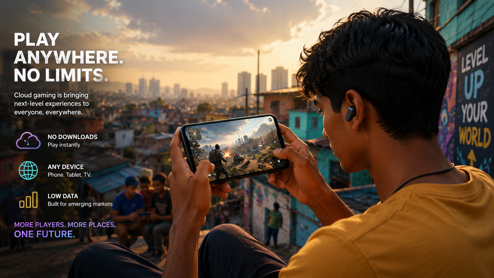
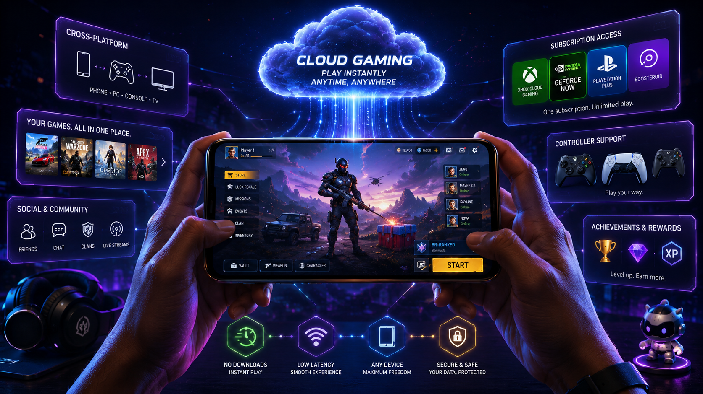

Cloud Gaming Is Finally Here — And It's Changing Who Gets to Play
For years, cloud gaming was a promise that kept almost delivering. In 2026, it stopped almost delivering and just delivered. Here's what changed — and why it matters more than the hardware wars ever did.
There's a moment that keeps coming up when you talk to gamers who grew up without powerful hardware. The moment they realised they could play a game that should have been impossible on their device — not because of an emulator or a port, but because the actual game was running somewhere else and being streamed to them in real time. For a lot of people, that moment arrived in 2026. And it wasn't a gimmick. It just worked.
Cloud gaming has been "almost there" for most of the last decade. The technology worked in ideal conditions. The conditions were rarely ideal. Latency made fast games feel broken, compression turned detailed graphics into blurs, and the services kept shutting down or pivoting before anyone had time to trust them. The promise outlasted the products, repeatedly, until it became background noise — something tech journalists wrote about every two years without anyone taking seriously.
Cloud gaming finally working on any device — phone, tablet, budget laptop.
What Actually Changed
Three things converged in 2025–2026 that didn't exist in combination before. Internet infrastructure got meaningfully faster and more consistent in markets that previously couldn't sustain cloud gaming — particularly across South Asia, Southeast Asia, and Latin America. Data centre footprints expanded dramatically, pushing processing closer to end users and cutting the round-trip times that caused perceptible lag. And the encoding technology improved enough that the visual quality at reasonable bitrates stopped being the obvious weak point that killed immersion.
None of these is a single dramatic breakthrough. That's partly why cloud gaming's arrival has felt underwhelming in tech coverage — there was no one announcement to write about. It just gradually stopped being broken, and then it was good, and then it became the obvious way for a large portion of the world to access games that a $700 console or a $1,500 gaming PC would otherwise lock out.
"Cloud gaming's breakthrough wasn't a product launch. It was infrastructure quietly catching up to a decade of premature promises."— Gaming Trends Analysis, 2026
Who This Is Actually For
The marketing around cloud gaming has always focused on convenience for existing gamers — play your library on your phone, switch from TV to laptop seamlessly. That's real and it's useful. But the more significant shift is happening with people who couldn't access this content at all before.
In markets where a mid-range smartphone is the primary computing device and a gaming console costs two months of average wages, cloud gaming isn't a convenience feature. It's the only viable path into a hobby that's been economically gated for decades. When the infrastructure works — and in growing parts of the world it now does — those barriers dissolve.

For mobile-first markets, cloud gaming is the entry point into AAA gaming — not a luxury upgrade.
The Hardware Wars Look Different Now
Sony, Microsoft, and Nintendo still sell hardware. They will for the foreseeable future. But the conversation around which console is "winning" feels increasingly beside the point when a growing fraction of players have never owned one and don't intend to. The real competition isn't between console manufacturers anymore — it's between cloud platforms for those users, and between cloud and mobile-native games for their attention.
Gaming ecosystem smartphones — devices purpose-built with gaming-grade cooling, displays optimised for low latency, and controller attachment systems — are one of August 2026's biggest hardware trends. These aren't gaming phones in the old sense of a gimmick with a logo. They're the primary gaming device for people for whom a console was never an option, now capable of running cloud-streamed AAA content that would have required a dedicated rig two years ago.

Gaming smartphones in 2026 are purpose-built for cloud streaming — not a side feature, the main event.
What Comes Next
The near-term story is latency. Sub-20ms round trips are achievable in major metro areas now. Getting that performance to rural areas, smaller cities, and developing markets is the next phase of the infrastructure buildout — and it's happening, just unevenly. As it spreads, the addressable audience for cloud gaming grows with it.
The more interesting long-term question is what cloud gaming does to game design itself. When developers don't need to worry about running on consumer hardware — when the compute budget is effectively unlimited and handled server-side — some of the constraints that have shaped game design for forty years start to disappear. What do games look like when they're not designed around what a $500 box can render locally? Nobody has a definitive answer. But developers are starting to ask the question seriously, and that's where the next genuinely new ideas are likely to come from.
Cloud gaming arrived without a parade. It just got good enough, then better, then quietly became the way a lot of the world plays games. That's a bigger deal than most of the hardware announcements of the last decade.
Share this article